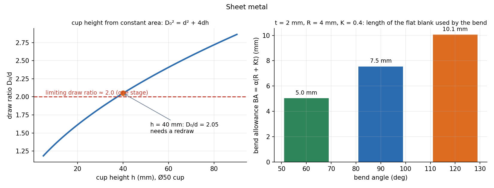

Sheet Metal Forming — Blanking, Bending and Deep Drawing
Sheet-metal parts come from three basic moves: shear the sheet (blanking, piercing), bend it, or draw it into a cup. Each has one governing number: cutting clearance, bend allowance (flat length), and draw ratio (how much blank diameter you can pull in).
Part of Manufacturing Technology - MOC. Previous: Bulk Deformation - Forging, Rolling, Extrusion and Drawing. Next: Orthogonal Cutting - Merchant's Shear Plane Model.
1. Blanking and piercing
A punch pushes through the sheet against a die: the metal yields, then fractures. Blanking keeps the cut-out piece, piercing keeps the sheet with the hole.
Clearance between punch and die is typically 5–10 % of the thickness per side. Too little: secondary shear and fast die wear. Too much: burrs and a rolled edge. For blanking, the die is made to the part size and the punch smaller; for piercing, the punch is the hole size and the die larger.
Example. A Ø40 hole in 2 mm sheet, TS MPa: mm, , clearance mm per side. Shear (angled) edges on the punch spread the cut over a longer time and lower the peak force.
2. Bending
The outside of a bend is stretched and the inside compressed; between them lies a neutral axis, whose length does not change, at a distance from the inside ( for tight bends, 0.5 for large radii).
Bend allowance (arc length of the neutral axis, the flat length used by the bend):
Flat blank length = sum of straight segments + all bend allowances. Example: mm, inner radius mm, , 90°: .
Minimum bend radius (to avoid cracking the outside): about 0.5t–2t for annealed ductile metals, more for hard tempers and along the rolling direction.
Springback. Elastic recovery after the load is removed opens the angle. The part must be over-bent by the springback angle, which is larger for high yield stress and a large ratio:
( before, after unloading; a tighter bend springs back less.)
V-bending force: with for a V-die, the die opening (typically ) and the bend length. Example: mm, mm, mm, TS MPa: .
3. Deep drawing
A flat blank is drawn by a punch through a die into a cup. The blank holder presses the flange to stop wrinkles. The wall is under tension and the flange under compression and shear.
Blank diameter from constant surface area (thickness unchanged): for a cylindrical cup of diameter and height ,
Draw ratio ; the limiting value for a single draw is (the wall cannot carry more force than the cup base can transmit, so it tears). Drawing force:
Example. Cup mm, mm, mm, TS MPa: (blank area equals the cup area, mm²), (just above the limit: use a second draw, or reduce ), .

Other sheet processes. Stretch forming (strains the whole sheet over a die), spinning, hydroforming, and incremental forming. Formability is shown by the forming limit diagram: the major and minor true strains at which necking starts. A high strain-hardening exponent and high plastic anisotropy help stretching and drawing respectively.
- Measuring the neutral axis from the outside of the bend: is measured from the inside surface.
- Using the tensile strength for blanking: the cut is shear, TS.
- Leaving the cup base out of the blank-area balance: the blank area equals the base plus the wall.
- Ignoring springback: the finished angle is larger than the die angle.
- Applying to every material (it depends on and friction).
Predict first: a part is bent to 90° in a tool that makes a perfect 90° die angle. Is the part 90°?
No: after the punch retracts the part springs back (a few degrees for mild steel, more for stainless or high-strength sheet), so the tool must over-bend by that angle, or the part must be coined (compressed at the bottom of the stroke).
How do you reduce the punch force in blanking without changing the part?
Bevel the punch face (shear angle) so only part of the perimeter cuts at a time, or stagger multiple punches. The same energy is spent over a longer stroke: lower peak force, a quieter press.
4. Connections
- Tensile Test, True Stress-Strain and Hardness — TS, and the shear strength used throughout.
- Bulk Deformation - Forging, Rolling, Extrusion and Drawing — constant-volume plasticity applies as well; deep drawing keeps the surface area, not the volume.
- Flexure Formula and Shear Force and Bending Moment Diagrams — the elastic stress distribution that gives the neutral axis; the plastic bend moves it to the inside.
- Static Failure Theories - Tresca and von Mises — shear at yield: (Tresca) or (von Mises).